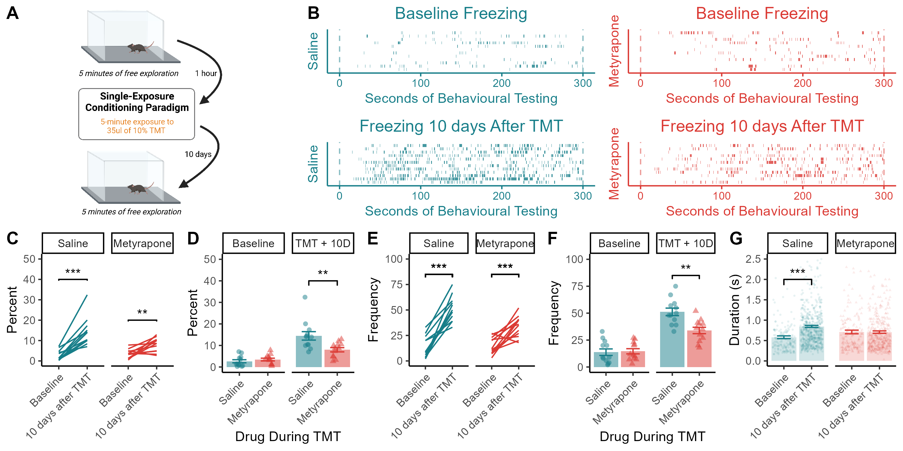

Figure 1 Basal Freezing Before & After TMT

- Mice are tested for basal levels of freezing and rearing before and 10 days after a single five-minute exposure to TMT. (B) Raster plots showing basal freezing before and 10 days after the single exposure to TMT. (C) Mice exhibit an increase in basal freezing after TMT exposure. (D) Metyrapone treatment during the single exposure to TMT reduces freezing in the absence of TMT 10 days later. (E) TMT increases basal freezing frequency, but (F) metyrapone treatment during TMT reduces freezing frequency 10 days later. (G) Mice treated with saline during TMT exhibit an increase in the average duration of freezing episodes, whereas metyrapone-treated mice do not. Data presented as mean value SEM. ** p < 0.01, *** p < 0.001.
1.1 Basal Freezing Behavior Before / After TMT
To examine whether inhibiting CORT synthesis during TMT exposure had lasting effects on defensive behavior, we measured freezing and rearing 10 days after the TMT exposure in the absence of any drug treatment or aversive stimulus (recall test).
a <- data %>%
na.omit() %>%
filter(Behavior == "freeze") %>%
group_by(ID, Drug, Behavior, session) %>%
summarise(
sum=sum(Duration),
freq = n(),
) %>% mutate(Perc = sum / 300 * 100) ## `summarise()` has grouped output by 'ID', 'Drug', 'Behavior'. You can override
## using the `.groups` argument.d <- a[a$Behavior == "freeze", ] %>%
ungroup()
res <- anova_test(data = d, dv = Perc, between = Drug, within = session, wid = ID)
get_anova_table(res)## ANOVA Table (type II tests)
##
## Effect DFn DFd F p p<.05 ges
## 1 Drug 1 22 4.648 0.042000000 * 0.113
## 2 session 1 22 58.894 0.000000117 * 0.515
## 3 Drug:session 1 22 11.586 0.003000000 * 0.173## # A tibble: 2 × 10
## Drug .y. group1 group2 n1 n2 p p.signif p.adj p.adj.signif
## * <fct> <chr> <chr> <chr> <int> <int> <dbl> <chr> <dbl> <chr>
## 1 Saline Perc 10 da… Basel… 12 12 1.10e-5 **** 1.10e-5 ****
## 2 Metyrap… Perc 10 da… Basel… 12 12 7.89e-4 *** 7.89e-4 ***Both saline- and metyrapone-treated mice displayed an increase in freezing time when the baseline session and the recall session were compared (main effect of test session: F1,22 = 58.89, p < 0.001; Fig 2A,B,C).
## # A tibble: 2 × 10
## session .y. group1 group2 n1 n2 p p.signif p.adj p.adj.signif
## * <chr> <chr> <chr> <chr> <int> <int> <dbl> <chr> <dbl> <chr>
## 1 10 days a… Perc Saline Metyr… 12 12 0.0075 ** 0.0075 **
## 2 Baseline Perc Saline Metyr… 12 12 0.415 ns 0.415 nsHowever, metyrapone administration during TMT reduced the amount of time spent freezing during the recall test relative to saline-injected controls (drug X session interaction: F1,22 = 11.57, p = 0.003; effect of drug on freezing during the recall test: p = 0.008; Fig 2D).
res <- anova_test(data = d, dv = freq, between = Drug, within = session, wid = ID)
get_anova_table(res)## ANOVA Table (type II tests)
##
## Effect DFn DFd F p p<.05 ges
## 1 Drug 1 22 7.025 0.01500000000 * 0.145
## 2 session 1 22 94.985 0.00000000192 * 0.669
## 3 Drug:session 1 22 9.645 0.00500000000 * 0.171Freezing frequency was increased by the single TMT exposure (main effect of session: F1,22 = 94.98, p < 0.001; Fig 2E).
## # A tibble: 2 × 10
## session .y. group1 group2 n1 n2 p p.signif p.adj p.adj.signif
## * <chr> <chr> <chr> <chr> <int> <int> <dbl> <chr> <dbl> <chr>
## 1 10 days… freq Saline Metyr… 12 12 0.00111 ** 0.00111 **
## 2 Baseline freq Saline Metyr… 12 12 0.831 ns 0.831 nsMice treated with metyrapone during TMT froze less often than saline controls (drug X session interaction: F1,22 = 9.64, p = 0.005; effect for drug during the recall test: p = 0.001; Fig 2F).
## Df Sum Sq Mean Sq F value Pr(>F)
## Drug 1 2.3 2.266 6.511 0.010831 *
## session 1 4.7 4.657 13.378 0.000264 ***
## Drug:session 1 4.6 4.579 13.153 0.000298 ***
## Residuals 1357 472.4 0.348
## ---
## Signif. codes: 0 '***' 0.001 '**' 0.01 '*' 0.05 '.' 0.1 ' ' 1a %>%
group_by(Drug) %>%
pairwise_t_test(Duration ~ session) %>%
mutate(p = formatC(p, format = "f", digits = 6))## # A tibble: 2 × 10
## Drug .y. group1 group2 n1 n2 p p.signif p.adj p.adj.signif
## <fct> <chr> <chr> <chr> <int> <int> <chr> <chr> <dbl> <chr>
## 1 Saline Dura… 10 da… Basel… 614 165 0.00… **** 2.93e-7 ****
## 2 Metyrapone Dura… 10 da… Basel… 407 175 0.95… ns 9.55e-1 nsThe average length of bouts of freezing increased post-TMT for saline-treated mice (drug X session interaction: F1,1357 = 13.15, p < 0.001; Effect of session for saline-treated mice: p < 0.001; Fig 2G), whereas there was no change in the length of freezing episodes before and after TMT for the metyrapone-injected group (p = 0.95; Fig 2G).